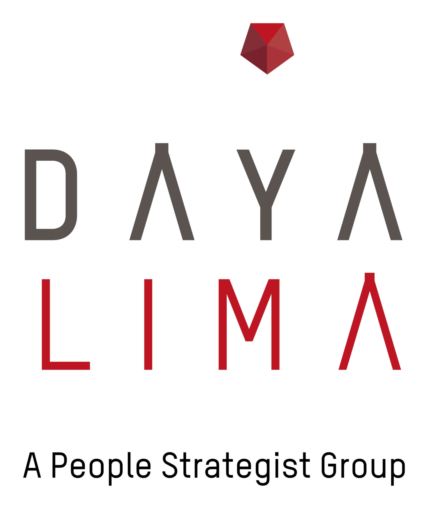
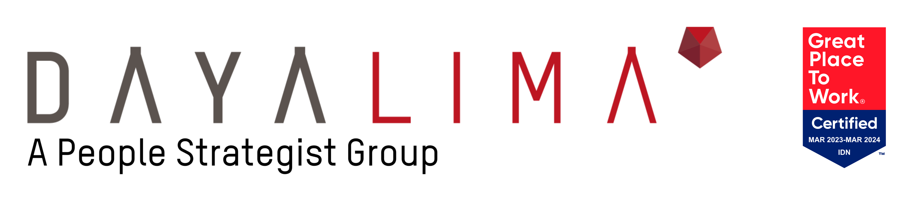
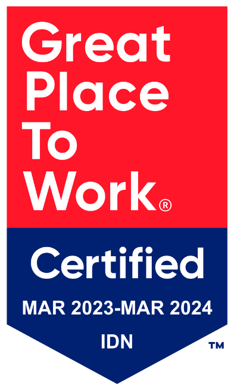

Slide cover · pitch
Logo top-left, eyebrow mono, headline asimetri
Pakai untuk slide pertama deck pitch atau case study. Italic serif untuk satu frase emphasis. Bottom rule + house line di bawah.
Halaman ini adalah versi awal panduan brand Dayalima Group — bukan brosur, bukan landing page. Tujuannya supaya tim internal di setiap business unit bisa baca, ngerti, dan ngasih masukan sebelum panduan ini kita rilis lebih luas.
Yang dibahas di sini bukan hanya komponen UI, tapi juga cara kita memposisikan diri, cara kita bicara, dan visual yang membawa cerita itu. Kalau ada yang kerasa nggak nyambung sama Dayalima, atau ada hal penting yang belum ke-cover — itu yang kita cari di review ini.
brand.dayalima dirancang untuk jadi satu tempat di mana semua tim dan business unit bisa mengakses panduan brand DLG — visual, voice, dan cara mengaplikasikannya.
Selama ini panduan brand Dayalima berserak di banyak tempat: file PowerPoint, dokumen lama, file desainer, repo website. Setiap kali ada pitch baru, slide deck baru, atau campaign baru — pertanyaan yang sama balik lagi: "warna red yang bener apa?", "font yang dipake apa?", "ini kalimatnya udah on-brand belum?"
Halaman ini upaya pertama untuk merangkum jawabannya di satu tempat — yang bisa dibaca dengan tenang, tanpa harus tanya orang lain dulu. Versi pertama (v1.0) hanya cover level holding (L1): brand-nya Dayalima Group sebagai grup, bukan masing-masing BU. BU pages akan menyusul di v2.
Kalau ini kali pertama kamu lihat brand DLG dari sisi sistem — baca dari atas ke bawah. Kalau cuma butuh referensi cepat (mis. "warna brand-nya hex apa") — pakai daftar isi atau scroll ke section yang relevan. Setiap section di-design supaya bisa berdiri sendiri.
Brand selalu ngikutin posisi. Kalau posisinya unclear, brand-nya juga jadi unclear. Sebelum ngomongin warna atau font, kita harus satu suara dulu soal apa yang sebenarnya kita jual.
Knowledge sudah ter-demokratisasi. AI dan internet bikin framework, best practices, dan playbook accessible untuk siapapun. Positioning "kami punya framework terbaik" sudah bukan moat.
Yang masih jadi gap nyata adalah eksekusi. Tiga dari empat profesional L&D mengakui kurang dari setengah materi training mereka diaplikasikan. Orang sudah tahu playbook-nya — yang susah adalah menjalankannya, di people level, di organisasi yang kompleks.
Posisi Dayalima: kita assessment-driven Performance Activation System. Setiap touchpoint informed by data tentang real people di real organisasi — bukan generic program. Sistem ini terus recalibrate berdasarkan data yang masuk.
Knowledge is democratized. Execution is the gap we close.DLG · CEO — Daniel Simeon Tumiwa
PPAS — People Performance Activation System — adalah satu noun phrase. Bukan akronim empat pilar. Bukan diterjemah. Cara baca: "We are a People Performance Activation System." Sama seperti "operating system" — nggak di-break per kata.
Karena PPAS adalah posisi berbasis data dan orchestration, brand-nya harus terasa analitis tapi hangat. Editorial — kayak whitepaper senior partner — bukan SaaS marketing yang kepanjangan janji.
Itu kenapa: warna brand cuma satu (red 600). Tipografi humanis dan tenang. Tidak ada gradient, glowing orb, atau stock photography. Angka tampil full-weight (1998 · 700+ · 150k+), bukan animated counter. Voice kita partner, bukan vendor.
Suara Dayalima terdengar seperti senior partner yang sudah 26 tahun di boardroom Indonesia dan tidak perlu pitch. Numbers do the talking. Tidak ada superlatif. Tidak ada janji yang belum dibuktikan.
Kita ngajak ngobrol, bukan jualin demo. Posisi-nya partner, bukan vendor.
"Get started" adalah default SaaS — tidak ada bobot. "Explore" mengundang berpikir.
Spesifik, kontekstual (Indonesian), peran jelas (coach). "Unlock potential" bisa milik siapa saja.
Angka + lokasi = bukti. Klaim "industry-leading" tanpa bukti adalah noise.
Lead dengan masalah yang terukur, bukan hyperbole.
Kalimat declaratif, ritmis, predikat-nya kerja nyata. "Empower" sudah jadi kata kosong.
"Kita" untuk Dayalima. "You" hanya saat CTA spesifik dan hemat. Default: partner voice.
"Dayalima" di body copy — bukan "Dayalima Group". "Dayalima Group" hanya di legal footer. "A People Strategist Group" adalah tagline, bukan nama. PPAS selalu English, selalu proper noun, jangan diterjemah.
Sentence case untuk body dan subhead. Hanya wordmark dan proper noun yang all-caps. Oxford comma. En-dash untuk interjeksi — seperti ini. Titik di akhir caption, bukan di akhir headline.
Tulis huruf untuk hitungan kecil di prosa editorial ("dua puluh enam tahun"). Pakai figur dengan tabular-nums (tnum) di data tombstone. Tanggal: 2026.04.12 di mono metadata; "April 2026" di prosa.
Pertanyaan di heading, jawaban di body. Lede paragraf buka dengan satu kalimat declaratif, baru expand. Long-form jangan lewat 62 karakter per baris. Pull quote pendek — di bawah 30 karakter — italic serif, di-frame oleh garis tebal.
Tanpa emoji. Tanpa tanda seru di body copy. Headline tidak pernah berakhir dengan tanda seru. Tanpa bullet poin yang panjangnya satu paragraf — kalau item butuh paragraf, ubah jadi heading + body.
"DAYA" tetap stone. "LIMA" merah — warnanya di-sample langsung dari wordmark, jadi referensi merah brand. Pentagon gem adalah lima sisi: Attract · Onboard · Develop · Perform · Retain.






Pakai horizontal · light. Tinggi minimum 28px di layar, 8mm di print. Posisi top-left dengan margin minimal 1× cap-height "D".
Pakai horizontal · reverse. Versi putih, jangan re-tint atau pakai outline. Background ideal: --stone-900 (#1C1917) atau hitam.
Pakai vertical. Kalau lebih kecil dari 64px, drop tagline-nya — atau pakai pentagon gem solo.
Minimum margin keliling lockup adalah cap-height huruf "D" di "DAYA". Jangan crowded sama tagline lain, foto, atau logo lain.
Di bawah ukuran ini, drop tagline italic-nya. Untuk avatar sosial atau placement super kecil, pakai pentagon gem saja.
Jangan re-tint salah satu sisi. Jangan pakai monokrom (semua hitam atau semua merah) kecuali emergency dan urgent. Versi reverse semua putih — itu satu-satunya monokrom yang sah.
Kalau wordmark harus sit on photo, pakai opaque ink rectangle — bukan gradient overlay. Idealnya pindahin wordmark ke area solid color saja.
Warna bukan dekorasi — warna adalah aksen. Dayalima Red dipakai sangat hemat: untuk CTA primer, "LIMA" di wordmark, satu kata yang ditekankan per heading, dan satu data-point per halaman.
Pakai red untuk: CTA primer, label section §NN, satu kata penekan di headline, satu angka penekan di halaman, "LIMA" di wordmark. Kalau sudah pakai red di tiga tempat di slide yang sama — pasti satu di antaranya bisa dihapus.
Heading: stone-800. Body: stone-700. Caption: stone-600. Border halus: stone-200. Background sunken: stone-50. Page selalu putih.
Brand red tidak pernah di-gradient. Tidak pernah di-pair sama complementary blue. Tidak pernah di-screen 50%. Kalau layout butuh visual interest, cari di tipografi atau garis — bukan warna.
Page = putih. Section yang di-emphasize boleh shift ke stone-50 (#FAFAF9). Jangan pernah pakai red sebagai field/full-bleed background — itu langsung bikin brand-nya feel SaaS.
Tiga keluarga, peran masing-masing jelas. Plus Jakarta Sans di-design oleh studio Indonesia (Tokotype) — bobot 400 sampai 800 cukup untuk semua kebutuhan. Hierarchy datang dari weight dan size, bukan warna.
Display, body, navigation, button. Bobot 400 sampai 800. Aperture-nya hangat — cocok untuk Indonesian context.
Section label, eyebrow, tanggal, registration mark, code snippet. 11–13px, 0.14em tracking, uppercase. Voice-nya whitepaper.
Italic only. Pull quote, caption foto, house line, attribution. Tidak pernah dipakai untuk body copy panjang.
Add Font → search "Plus Jakarta Sans" → tambahkan ke akun Google. Setelah itu font akan muncul di Slides, Docs, dan Sheets. Pakai bobot 800 untuk title, 400 untuk body, 500 untuk button/eyebrow.
Download Plus Jakarta Sans dari fonts.google.com → install di system → restart PowerPoint. Untuk konsistensi tim, simpan installer-nya di drive bersama.
Stack-nya: "Plus Jakarta Sans", ui-sans-serif, system-ui, -apple-system, sans-serif. Browser/OS otomatis pakai humanist sans terdekat (San Francisco, Segoe UI). Hindari Arial atau Helvetica sebagai pengganti — terlalu corporate dan tipis kontrasnya.
Untuk emphasis — naikkan bobot (700 ke 800), atau tambahkan italic serif seperti ini untuk satu frase. Jangan mix dengan display font lain — itu langsung bikin brand jadi inkonsisten.
Kebanyakan brand SaaS pakai card berwarna dan ilustrasi. Dayalima pakai garis dan tipografi. Pola di bawah ini adalah tanda sistem ini bekerja — kalau tiga dari lima muncul di satu layar, layar itu kelihatan sebagai milik kita.
Pakai di setiap section utama. Format: §NN — Title dalam JetBrains Mono 11px, color brand red.
Knowledge is democratized. Execution is the gap.DLG · CEO— Daniel Simeon Tumiwa
Untuk house line, CEO quote, atau credo. Hindari testimoni client yang panjang — itu butuh format card berbeda.
Untuk angka yang harus diingat. Maksimum 3 tombstone per layar. Angka muncul full-weight — tanpa animation counter.
Ink rule di top section sama efeknya kayak section break di whitepaper — memberi otoritas. Pakai di setiap section utama, jangan di subsection minor.
Selama foto dokumenter belum tersedia, pakai placeholder ini. Jangan pakai stock photo, AI image, atau ilustrasi office isometric sebagai pengganti.
Empat skenario harian: slide cover untuk pitch, signature email, post LinkedIn, dan header dokumen panjang. Semua pakai komponen yang sama — tinggal di-recompose.
Pakai untuk slide pertama deck pitch atau case study. Italic serif untuk satu frase emphasis. Bottom rule + house line di bawah.
Wordmark di atas, garis 1px ink memisahkan dari blok kontak. Mono untuk metadata. Tidak ada disclaimer panjang, tidak ada gambar promosi.
75% L&D content tidak pernah diaplikasikan. Itu bukan karena training-nya jelek. Itu karena assessment di setiap step — sebelum, saat, sesudah — sering hilang. Knowledge is democratized; execution is the gap.
#PPAS · #PerformanceActivation · #Indonesia
Bold pertama untuk angka/fakta. Italic serif untuk credo line. Hashtag pakai mono casing. Tidak ada emoji, tidak ada call-to-action manipulatif.
Riset bersama 142 organisasi Indonesia tentang transfer rate dari training ke perilaku kerja. Dipresentasikan di HR Forum Asia 2026.
Untuk whitepaper, riset, atau dokumen formal. Mono metadata di header memberi konteks (kategori, tanggal, versi). Ink rule sebagai pemisah resmi.
Setiap business unit punya brand voice sendiri di level produk (L2). Tapi di level holding (L1), semuanya beroperasi sebagai satu sistem PPAS. Dua di antaranya core terhadap praktik pendiri; empat lainnya memperluas system di sepanjang people lifecycle.
Assessment & leadership development — praktik pendiri. BU terbesar; bentuk asli dari sistem ini.
DaDi · Est. 1998 · L2Executive search dan senior hiring. RPO, mass recruitment. Entry yang assessment-driven.
DLR · Est. 2006 · L2Talent placement dan workforce solutions. P3MI Indonesia.
DTG · Est. 2011 · L2HR technology — assessment, coaching, dan measurement stack. Delapan product groups; lapisan AI-enhanced dari PPAS.
D-Labs · Est. 2018 · L2Strategic transformation consulting. Org design dan people-strategy alignment (SPORT framework).
Qarsa · Est. 2014 · L2Employee wellbeing, engagement, HR digital transformation, talent management.
Inara · Est. 2020 · L2Daftar di bawah bukan dosa. Ini early-warning — pola yang menarik desain ke arah "SaaS marketing template" yang kelihatan sama dengan ratusan brand lain. Editorial, bukan SaaS — itu briefnya.
Tidak ada glow abstrak sebagai background. Tidak ada gradient mesh. Tidak ada ilustrasi 3D. Page-nya putih; bobot datang dari tipografi dan garis.
Kalau real photo belum ada, pakai photo placeholder editorial. Tidak pernah pakai Unsplash boardroom atau AI-generated office.
Angka muncul full-weight. Tidak ada ticker, tidak ada count-up, tidak ada springy reveal. Angka adalah headline.
Tidak ada emoji di mana pun — body, heading, sosial. Tidak ada tanda seru di body. Headline tidak pernah diakhiri dengan tanda seru.
Pakai "Start a conversation," "Read the thesis," "Explore PPAS." CTA-nya senior partner, bukan SaaS funnel.
PPAS — People Performance Activation System — adalah proper noun. Selalu English. Selalu satu frasa. Tidak di-break per huruf jadi akronim.
Red 600 adalah satu-satunya warna brand. Tidak ada teal, oranye, atau accent palette kedua. Kalau butuh visual interest, cari di tipografi atau garis.
Tidak ada yang lebih bulat dari 24px. Tidak ada card pill-shaped. Stadium button hanya untuk pill nav, bukan untuk CTA primer.
Bahasa motivasional generik adalah lawan dari brand ini. Voice-nya partner, bukan coach-LinkedIn. Spesifik mengalahkan feel-good.
Tujuan v1.0 ini bukan jadi final. Tujuannya supaya kita semua punya satu draft yang bisa di-bahas bareng. Empat hal yang aku paling pengen denger feedback-nya di bawah.
Bukan typo (itu pasti ada). Bukan alignment piksel (itu nanti). Empat pertanyaan ini yang paling penting dijawab dulu — kalau salah dari fondasi, semua bagian visual jadi salah turunan.
Brand v1 review